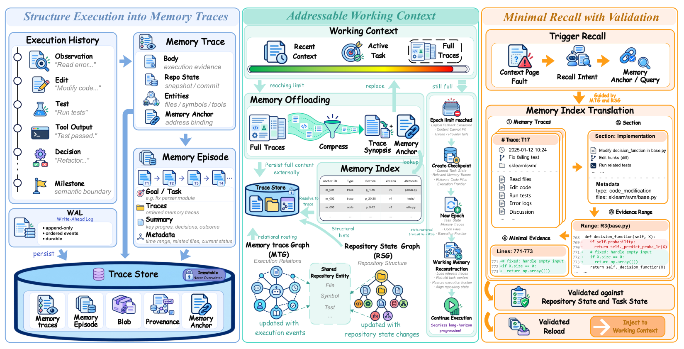

01研究背景与问题定义
长程编程任务中，代理会反复读代码、修改和测试。上下文刷新后，它可能重新找到早先的失败，却没找到后续修复；也可能记得某次测试通过，却忽略相关代码后来又被改过。MemTrace 关注的就是这种恢复出的记忆与当前任务、仓库状态不一致的问题。
两种变化，让真实历史也可能误导下一步
| 变化来源 | 具体风险 | 恢复时需要回答 |
|---|---|---|
| 后续执行改变了结论 | 失败已被修复，孤立找回旧失败仍会重复诊断 | 后来发生了什么，工作是否已经闭合？ |
| 代码改变了证据条件 | 旧测试通过是真实事件，却未必证明当前代码仍然通过 | 证据依赖的条件现在是否仍成立？ |
更长窗口、压缩和外置历史能帮助保留信息，代码结构图能帮助定位文件，但它们并不自动串起一次失败之后的修复与验证，也不自动检查旧结果是否还适用。因而，恢复工作的关键除了找回内容，还包括重建进度与核对来源条件。
核心切入：保存历史，单独判断当前能否采用
MemTrace 将完整工作单元封存为不可变 Trace，保留证据及生成条件；用 MTG 连接执行事件，用 RSG 表示当前仓库，再通过共同的文件、符号和测试引用连接两者。刷新后，系统据此重建任务前沿，定位候选，校验后再恢复所需证据。收益取决于关系和依赖记录的质量，代价是维护、检索及必要的重新验证。
02方法与技术路线
MemTrace 在代理原有的编辑与测试过程中维护持久执行记忆。完整证据保存在窗口之外；窗口内的简述、锚点与检查点帮助代理在刷新后继续同一任务，实际恢复的正文由相关性、适用性和预算共同决定。
窄屏可横向查看图内关系。
展开论文原图｜Figure 2：执行记忆与恢复流程

封存与卸载：把完整证据留在窗口之外
一次编辑、测试、诊断或修正形成可供后续使用的完整工作单元时，系统将其封存为 Trace，保存执行正文与出处、生成时的仓库状态、涉及的文件／符号／测试，以及稳定锚点。过大的单元拆为多个有独立锚点的 Trace。封存后正文不覆写，后续修正追加为新记录与关系，使当时的依据仍可回查。
接近上下文预算时，系统卸载已完成 Trace 的正文，在窗口内保留预算允许的简述与锚点；暂时不可见的锚点仍可通过持久索引找回。刷新前另存任务前沿与活跃锚点，前沿表示尚未闭合的工作及依赖。卸载只改变当前可见性，完整记录、双图和实体绑定持续保存。
双图定位：串起历史进度与当前代码
这里的图是节点与关系组成的数据结构。MTG 的节点是一条条 Trace，RSG 的节点是当前仓库实体；两者各自维护历史关系和代码关系，由投影 Π 记录 Trace 与所引用实体的绑定。
| 结构 | 节点与关系 | 恢复时的用途 |
|---|---|---|
| MTG 执行记忆图 | Trace 之间的执行顺序、依赖、验证、修正和取代 | 从旧失败找到后续修复与复测，判断工作进度 |
| RSG 仓库状态图 | 当前文件、符号和测试；defines、calls、imports、covers | 从待修改对象扩展到相关代码与测试 |
| 投影 Π 实体绑定 | Trace ↔ 文件路径、限定符号名及测试引用 | 在执行记录与当前代码对象之间定位；同一实体可关联多条历史记录 |
检索可从锚点、前沿关联 Trace 或仓库引用进入。系统按请求沿有限 RSG 关系扩展，再沿 MTG 的依赖、验证、修正与取代关系最多扩展两跳；直接候选优先，扩展后去重。双向查看边用于发现后续事件，不改变“谁验证谁”的含义。RSG 随仓库变化在前沿附近增量更新，其中 covers 仅是测试到代码的定位关联，不能证明测试通过。
适用性校验：检查条件变化与显式取代
τ 是候选 Trace，Rₜ 是当前仓库，mₜ 是当前任务前沿。相关性另行判断。
- aligned：来源条件仍适用。比较生成状态、实体绑定及出处所记录的条件，不要求整个仓库不变。测试结果需核对测试和已记录依赖，仅目标函数没改还不够；条件变化或无法核实则不自动复用。
- superseded：当前前沿存在显式取代关系。后续记录是否替换旧结论，由 MTG 关系表达。时间更晚本身不足以证明取代，否则另一模块的新结果可能错误遮蔽仍有用的旧证据。
这一定义给出了证据采用的检查契约，可靠性仍受依赖覆盖与关系质量限制。记录中未出现的动态依赖、环境条件或语义变化，不会因为存在一个 aligned 谓词就自动得到验证。
刷新与恢复：在预算内重建可以继续工作的上下文
新窗口先放入任务、检查点与仓库作用域，再沿 MTG 重建前沿，通过 RSG 与 Π 定位候选，检查后决定是否装回正文。工具说明、元数据和下一次响应预留也计入预算，不能把标称窗口全部分给历史。
| 候选情况 | 恢复行为 | 当前能否作为证据 |
|---|---|---|
| 相关、适用且放得下 | 恢复完整正文、来源标签与锚点 | 可以支持当前动作 |
| 条件变化或无法核实 | 读取当前代码或重跑所需测试 | 需要新的当前证据 |
| 显式查询旧历史 | 旧记录或被取代记录可带历史标签取回 | 解释过去，不能直接证明当前状态 |
| 适用但完整块放不下 | 单独跟踪并延后，不截断证据块 | 预算延后不表示证据失效 |
代理以恢复后的进度、当前仓库作用域和获准证据继续编辑与测试，随后生成新的 Trace。这一循环避免每次重放全部历史，也让旧通过记录在条件变化后退出当前证明。
说明性示例｜两张图如何找回一次失败的修复，并检查旧通过是否还能用
依据论文机制构造，非原始运行日志。版本 A 的空输入测试失败，代理在版本 B 修改 parse，随后复测通过。下图画出部分执行关系与代码关系，仅展示一条 Trace—实体绑定，实际一条记录可绑定多个实体。
刷新后若先找到 T1，MTG 可以继续定位 T2、T3，恢复“这次失败后来已被处理”的进度。RSG 与 Π 则帮助从当前 parse 或测试实体找到相关记录；它们只提供候选，不能单独确认版本 B 的通过仍然适用。
若之后修改了测试依赖，T3 依旧是真实历史，但不再自动证明当前代码通过，需补跑必要测试。知道旧失败已被处理与重新验证当前状态可以同时成立。
03实验设计与结果分析
实验固定 deepseek-v4-flash-0731-high、200K 上下文，在 Codex CLI 与 mini-swe-agent 内分别比较，无显式步数上限。DeepSWE 有 113 个任务；SWE-EVO 排除两条原始评估无效任务后使用 46 条；SWE-Milestone 包含连续软件演进中的 98 个里程碑。
端到端收益：两个框架均受益，但时间代价不同
| 执行框架／方法 | DeepSWE pass@1 | SWE-EVO Resolved | Milestone Score |
|---|---|---|---|
| Codex／Native | 35.4 | 47.8 | 28.6 |
| Codex／Observation Masking | 34.5 | 65.2 | 24.4 |
| Codex／MemTrace | 56.6 | 69.6 | 46.4 |
| mini-swe／Native | 48.7 | 52.2 | 34.5 |
| mini-swe／MemTrace | 66.4 | 63.0 | 48.3 |
MemTrace 在两个框架的主指标上均有改善，而观察遮蔽在 Codex 的 SWE-EVO 上有效、在其他列却退化，提示上下文管理与执行策略存在交互。整项完成也不等于局部修复最大：Codex／SWE-EVO 中 MemTrace 的 Fix Rate 为 70.6%，略低于遮蔽的 72.1%，但完整解决率更高。
| 基准 | Codex CLI | mini-swe-agent |
|---|---|---|
| DeepSWE | 42.02 → 54.17 | 103.77 → 75.30 |
| SWE-EVO | 30.00 → 82.05 | 170.97 → 114.03 |
成功率收益没有统一转化为提速。Codex／SWE-EVO 用时约为原生 2.74 倍，mini-swe 则缩短时间。现有结果支持完整系统的效用，但尚不能确定相同实际时间或 token 投入下的优势；墙钟也不能直接换算成费用。
- 指标边界：pass@1 与 Resolved 衡量整项解决，Milestone Score 综合功能正确性与完成覆盖，三列不能当作同一成功率。
- 比较范围：RepoGraph 仅评估 Python，不能拿它的子集值与 MemTrace 全语言值直接比较。表中选列用于展示匹配设置下的整体变化。
组件消融：历史留存与关系路由的价值随任务而变
| 配置 | SWE-EVO Resolved | DeepSWE pass@1 |
|---|---|---|
| Native | 47.8 | 35.4 |
| Trace Store Only：平面检索 | 65.2 | 32.1 |
| w/o MTG：移除执行顺序与依赖边 | 65.2 | 34.5 |
| w/o RSG：移除仓库结构候选扩展 | 69.6 | 44.2 |
| 完整 MemTrace | 69.6 | 56.6 |
- SWE-EVO：平面存储已带来较大收益，移除 RSG 扩展没有改变主指标，不能推断每个组件在所有任务中都必要。
- DeepSWE：平面存储甚至弱于 Native，加入执行关系与仓库扩展后逐步提高，支持跨较广代码范围恢复关系的价值。
消融范围限制了归因：w/o RSG 移除的是结构候选扩展，并未独立关闭来源有效性校验，因此差距不能证明 aligned 本身可靠。Trace Store Only 的 DeepSWE 有一条运行缺少官方评分，使用 36/112；完整方法使用 64/113，分母略有不同。
状态诊断：文件经常变化，但变化不等于证据出错
独立于主性能运行的 84 条归档轨迹中，9,226 条有文件绑定的 Trace 有 57.0% 遇到后续绑定文件变化。这说明检查来源条件有现实必要，但文件变化不一定改变证据含义；实现中的 invalidation 计数也受维护政策影响，不能直接解释为纠正了多少条错误记忆。要验证校验质量，还需要对具体证据的当前适用性建立独立标签。
04贡献、局限与综合评价
核心贡献：把历史记录变成有采用条件的执行证据
MemTrace 将完整历史、工作进度和当前来源条件分开维护，并在恢复时重新连接。主结果支持完整系统的实用性，任务差异化消融也表明仅有持久存储并非总能奏效。可迁移的思想是：证据可以一直保存，但它支持当前动作的资格需要随代码与任务进展重新判断。
关键局限：检查能否覆盖真正影响结论的条件
- 依赖可能遗漏：环境变量、构建配置或未记录的传递依赖改变时，文件／符号绑定未必足够；现有审计实现还存在 Python 符号级与其他语言文件级的覆盖差异。
- 关系可能判错：漏记取代会让旧判断继续进入候选，错记则可能遮蔽有效记录。状态对齐本身也不能证明当时的模型诊断正确。
- 保守检查有代价：拒绝本可复用的证据会增加重读与重跑，已有耗时结果要求同时评估维护开销与可靠性收益。
更有区分力的检查应分别改变无关文件、被测函数、传递依赖和外部配置，标注旧证据是否仍适用，并在候选相同的条件下比较校验开关，测量误复用、误拒绝及检查成本。这样才能把“找到了什么”与“采用判断是否正确”分开验证。这是进一步实验的建议。
独立研究启发：优先做结论级绑定与最小增量验证
以下是尚待验证的改进方向。优先级最高的是把“什么结论依赖什么条件”与“条件变化后补做什么验证”连接起来；检索深度、恢复粒度和维护强度则作为预算分配问题共同处理。
| 主线 | 具体改动 | 需要验证的收益与风险 |
|---|---|---|
| 结论级依赖与取代 | 在不可变 Trace 内引用具体结论，记录代码、环境及证据类型；只取代被后续证据否定的部分 | 减少误复用与错误屏蔽；需控制依赖采集、结论拆分和关系维护成本 |
| 按需增量验证 | 区分适用、不适用与条件不足；依据下一动作的依赖和误用风险，选择读代码、局部复测或扩大验证 | 以足够验证为约束减少重复工作；不能把局部通过扩写成整体通过 |
| 按预算调整恢复与维护 | 关键修复链可在预算内追过两跳；封存时建立完整证据单元；跨模块变化或恢复冲突时提高维护强度 | 减少漏找最终状态与整块延后；需防止拆分丢前提、图扩展失控和漏触发 |
评估应同时报告误复用、误拒绝与条件不足比例，避免靠一律拒绝得到表面的低错误率；端到端则分别在相同墙钟与 token 预算下比较成功率，把依赖采集、图维护、检索和补充验证都计入成本。上述方向是否有效，最终取决于能否在相同投入下改善继续执行的可靠性。
综合判断：价值取决于恢复后的证据是否可信且划算
现有证据确立了所评估设置中完整系统的收益，尚未证明所有依赖都被捕获，或每个校验环节都可靠。MemTrace 值得保留的是“历史留存与当前采用分开”的设计；它能走多远，由依赖覆盖、关系准确性和维护代价共同决定。